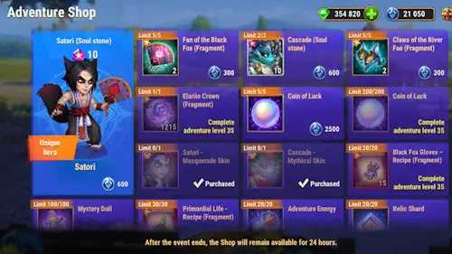

Satori, Cascade and Orm Season Adventure Shop - What to Buy First
- By: Alexandre Domingos. .
What Is This Season Adventure Shop?
Hey everyone, Alexandre here from Alexandre Games. This Season Adventure Shop is built around Satori, Cascade, and Orm, and the correct shopping order matters a lot. Some items are long-term account upgrades, while others are farmable or simply too risky for the price.
The short version is this: beginners should focus first on Cascade Soul Stones and Satori Soul Stones. Both heroes are receiving excellent legendary relic skills, and neither should be underestimated. Satori was already strong before this update; now he is not only strong, he is becoming part of the meta again.
For Orm, do not confuse this shop with his main unlock path. Orm Soul Stones come from the exclusive Awakening Orm event, not from the same priority logic as Satori and Cascade hero stones. In this shop, the big Orm item to watch is the Elarite Crown.



Understanding the Two Shop Currencies
Valor Coins 
Valor Coins are the boss-kill currency. In this type of season, they are normally the currency you protect for Relic Shards first. Relic progress is one of the hardest things to replace later, so do not spend Valor Coins casually.
Adventure Coins 
Adventure Coins come from daily season missions and shop progression. This is the currency used for Soul Stones, artifact fragments, recipes, Adventure Energy, and other shop items. The main trap is spending it on flashy items before securing the heroes and artifacts that actually move your account forward.
Valor Coin Priority
#1 Priority: Relic Shards
Your first Valor Coin goal should be Relic Shards. Satori and Cascade are both getting very important legendary relic upgrades, and these upgrades are exactly the kind of progress that can change matchups instead of only adding a little raw power.
Satori gains a legendary relic kit that improves his Fox Fire mark pressure. At Relic Level 1, Searing Claws deals magic damage to enemies with Fox Fire marks without removing those marks. If no enemy has marks, it applies 6 marks to each enemy. At higher relic levels, Spirit Banishment applies an additional mark, and Cunning Fox reduces damage from enemies carrying 4 or more Fox Fire marks.
Cascade gains excellent control and survivability. At Relic Level 1, Frozen Maelstrom launches a projectile every 12 seconds at the enemy back rows, dealing magic damage and stunning them for 1 second. His upgraded Refluence can reduce enemies' Physical Attack by 40%, and Iceberg Shard gives him 5 seconds of damage immunity after activating Hydrokinesis.
My opinion: do not underestimate these two heroes. Cascade becomes much more annoying and flexible, while Satori turns from an already dangerous Mystery mage into a serious meta threat again.
Adventure Coin Priority Guide
#1 Priority: Cascade and Satori Soul Stones
If you are a beginner or still building these heroes, your first Adventure Coin priority should be Cascade Soul Stones and Satori Soul Stones. Relics are powerful, but hero evolution still matters. A hero with great relics but weak star progress will hit a wall faster than players expect.
Satori used to be available through the Highwaymen Shop, but that shop is being deactivated at the end of the season and it is no longer possible to earn new shop coins. That makes this event much more important for Satori stones. Cascade is also a premium target because his new legendary skills give him control, extra pressure, and defensive tools.
#2 Priority: Weapon Artifacts for Satori and Cascade
After Soul Stones, the next excellent Adventure Coin purchases are the weapon artifact fragments for Satori and Cascade.
| Hero | Weapon Artifact | Why It Matters |
|---|---|---|
| Satori | Fan of the Black Fox | Activates with his ultimate and gives Magic Attack. Satori scales heavily from magic damage and Fox Fire mark detonation. |
| Cascade | Claws of the River Fae | Gives both Magic Penetration and Armor Penetration. Because Cascade's kit links penetration values, this artifact is extremely efficient. |
#3 Priority: Orm's Elarite Crown
The Elarite Crown is a rare Orm artifact item. As soon as you unlock that shop tier, buy it quickly if you are building Orm or Elarite titans. Orm is an Elarite and Water support titan whose Devastating Link binds all allies to the enemy in the center, stores 50% of damage taken by allies for 8 seconds, and releases that stored value as damage when the effect ends.
Orm's Elarite Crown provides extra damage to Light and Dark titans and extra defense from Light and Dark titans. That makes it much rarer and more strategic than ordinary farmable equipment.
Do Not Forget: Relic Shards Stay High Priority
Relic Shards are mainly a Valor Coin priority in this type of shop. After planning your Adventure Coin purchases for Soul Stones, weapon artifacts, and Orm's Elarite Crown, keep your Valor Coins focused on Relic Shards instead of spending them on lower-impact items.
Equipment Items: What Is Worth It?
Primordial Life Recipe
Primordial Life is a red equipment item used by several heroes, so it may look useful at first glance. The problem is that it is not rare enough to be a top shop priority. You can farm it by spending campaign energy, buy it in the Frontier shop, or obtain it from the Tower.
Because it is available through regular gameplay, I would not prioritize Primordial Life over Soul Stones, weapon artifacts, Orm's Elarite Crown, or Relic Shards.
Black Fox Gloves Recipe
Black Fox Gloves are more interesting because they are Satori equipment. The item gives Magical Crit Hit Chance +620 and Toughness +930. Magical crit is especially attractive on Satori now because his updated relic direction makes him more dangerous in Mystery magic teams.
Still, treat Black Fox Gloves as a middle priority. Buy it after the core account-changing items, not before Soul Stones or key artifacts.
Avoid: Coin of Luck
I need to talk about this one specifically because it looks tempting. The Coin of Luck takes you to a fortune wheel called Hero's Fortune, where you can potentially win skins, talismans, and other items. Sounds exciting, right?
Here is the problem: you can also win outdated titan artifacts, Soul Stones from older titans you could already get from Summoning Spheres, or other low-value items. You are trading a guaranteed good investment for a gamble.
My opinion: the most valuable prize on the wheel is talismans, but there are dedicated Talisman Fever Events where you can earn those far more reliably. Do not trade the certain value of Satori and Cascade progress for a spin of luck.
During the event you will naturally earn some Luck Coins for free. Use those free coins to spin the wheel and you will understand exactly what I mean.
Other Items You Can Usually Skip
- Random equipment: farm it with campaign energy while also completing event missions.
- Gold: useful early, but poor value compared with unique progress items.
- Metacubes: available from regular game modes, so they should not beat hero progress.
- Skin certificates: usually better obtained through Outland discount events.
- Sparks of Power: endgame accounts naturally accumulate them over time.
Quick Shopping Priority Cheat Sheet
| Currency | Item | Priority | Notes |
|---|---|---|---|
| Valor Coin | Relic Shards | Buy first | Best long-term progress for the new legendary relic upgrades. |
| Adventure Coin | Cascade Soul Stones | Top priority | Build him while his relic upgrades raise his control and survivability. |
| Adventure Coin | Satori Soul Stones | Top priority | Highwaymen Shop is being deactivated, making this opportunity important. |
| Adventure Coin | Fan of the Black Fox | High | Satori weapon artifact, Magic Attack boost. |
| Adventure Coin | Claws of the River Fae | High | Cascade weapon artifact, dual penetration value. |
| Adventure Coin | Elarite Crown | Buy fast | Rare Orm artifact item; prioritize once unlocked. |
| Adventure Coin | Black Fox Gloves | Medium | Satori item: Magical Crit Hit Chance +620, Toughness +930. |
| Adventure Coin | Primordial Life | Low | Useful, but farmable in campaign, Frontier shop, and Tower. |
| Adventure Coin | Coin of Luck | Avoid | Gamble item; use only the free coins you receive naturally. |
Use the Code: ALEXANDREGAMES
The best place to buy talismans and equipment is the official Hero Wars Hub store. You also help support the blog content and future event guides.
Final Thoughts
This shop is more valuable than it may look at first. Satori and Cascade are not filler heroes here; both are receiving strong legendary relic tools. Satori gets more Fox Fire pressure and better protection against marked enemies, while Cascade gets backline control, Physical Attack reduction, and damage immunity.
My final recommendation is simple: buy guaranteed progress first. Get Satori and Cascade Soul Stones, secure their weapon artifacts, grab Orm's Elarite Crown quickly when it unlocks, and keep Relic Shards high on your list. Leave Coin of Luck to the free spins.
Explore more Hero Wars guides!
Leave Your Opinion!
Did you like this Satori, Cascade and Orm Adventure Shop guide? Is there something you would change in the priority list? Join the comment section and share your opinion.
Click the button below to get started: